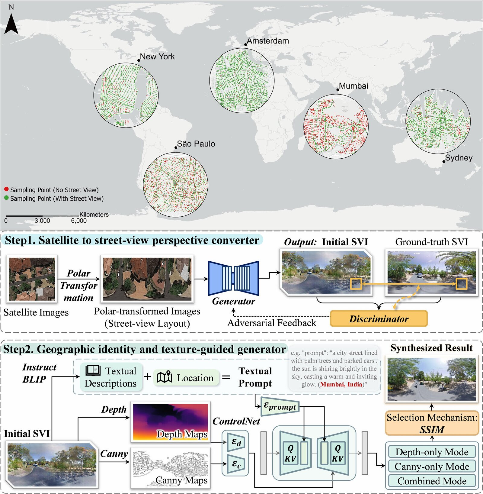
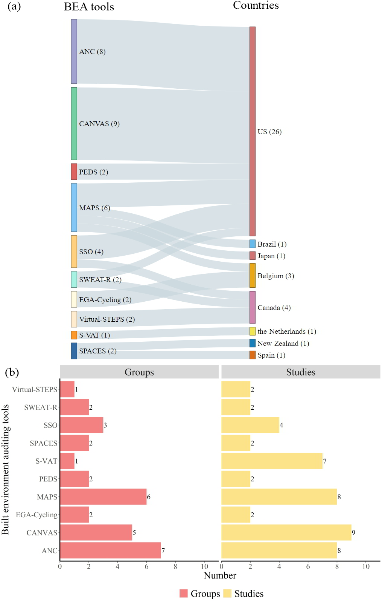
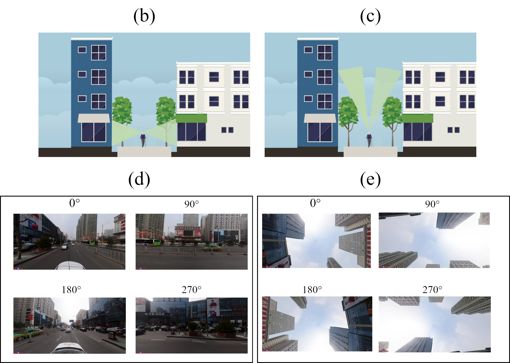
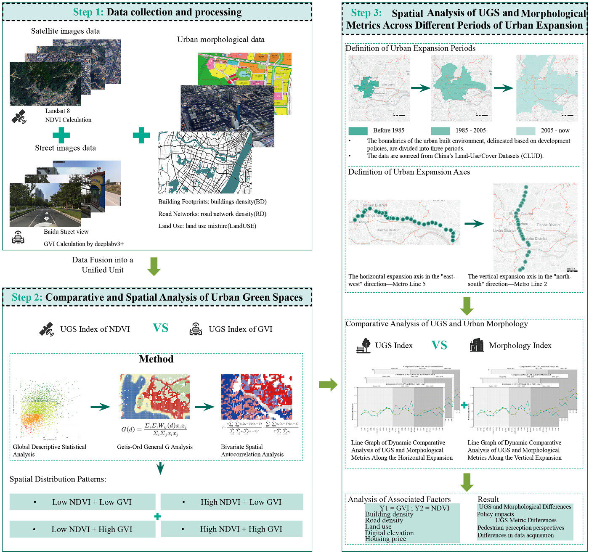
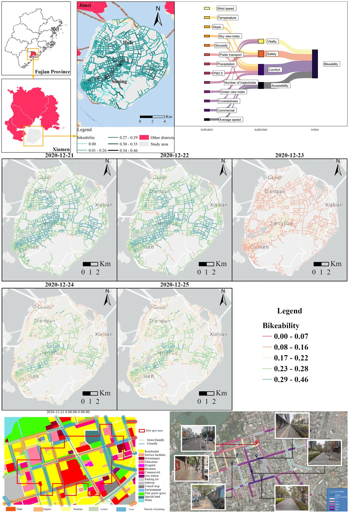
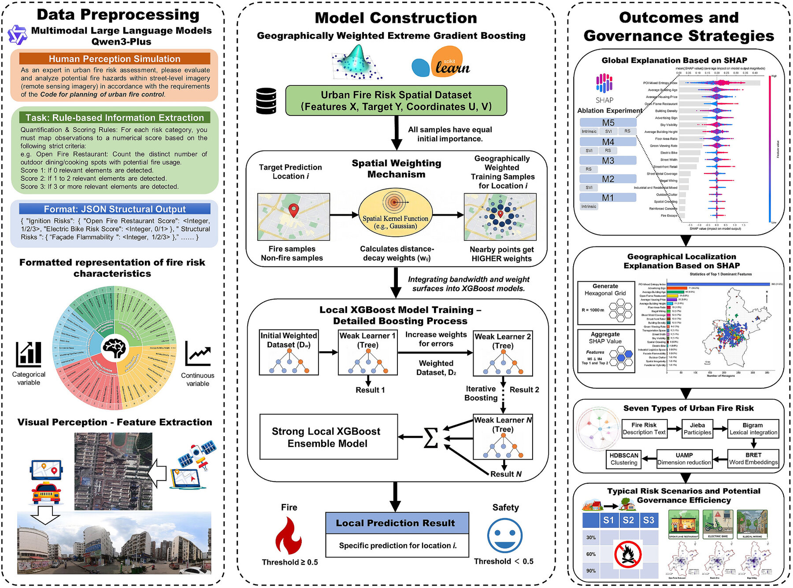

Urban Visual Intelligence

Street view imagery (SVI) provides an eye-level, human-centric record of urban environments, capturing pedestrian-experience features such as greenery, facades, and safety-related cues that satellite imagery cannot observe. This project develops urban visual intelligence: turning massive street-level imagery into measurable, explainable, and actionable urban knowledge. The research covers the full chain from data coverage and generation, visual auditing of built environments, eye-level greenery and multi-source urban analysis, to visual-semantic urban governance with large language models. It is also the methodological backbone of my PhD research on improving obesogenic environmental assessments with advanced geospatial methods.
1 Street view data coverage and generation
The global coverage of SVI is highly uneven: published studies concentrate in the United States and Europe, while developing regions across Asia, Africa, and South America remain systematically underrepresented, which limits the inclusiveness of SVI-based analytics. We proposed GeoIdentity-Sat2Street, a geographic identity preserving framework that generates street view imagery from satellite views by coupling a polar-transformation conditional GAN with a diffusion-based generator, and constructed the MultiCities Dataset, a benchmark of 50,000 paired satellite-street-view images across five cities on five continents. Applying the framework to Kathmandu, Nepal improved usable street-view coverage by about 28%, showing a scalable way toward globally representative urban analytics.

Figure 1. Uneven street view imagery coverage in selected cities (top) and the GeoIdentity-Sat2Street generation framework (bottom).
The paper was published in ISPRS Journal of Photogrammetry and Remote Sensing
2 Visual auditing of built environments
How can SVI be used to audit built environments in a systematic and reproducible way? We conducted a systematic review of street view imagery-based built environment auditing tools, synthesizing the auditing dimensions (eye-level and sky-view angles), the detection and segmentation models behind them, and their applications across countries and research groups. Furthermore, we extended the auditing from 2D facades to 3D vertical cities by developing a 3D hedonic price model (3D HPM) that quantifies vertical urban features from SVI with machine learning for vertically developed cities.

Figure 2. An overview of the studies using different built environment auditing tools in different countries.

Figure 3. Illustrations of SVI sampling and the eye-level and sky-view angles (a)-(e).
The review was published in IJGIS, and the 3D HPM study was published in Habitat International
3 Eye-level greenery and multi-source urban analysis
Eye-level greenery often diverges from what aerial indicators suggest. We introduced a multi-perspective framework integrating the aerial perspective (NDVI) and the human-centric perspective (GVI) with urban morphological, socioeconomic, and topographic indicators, revealing how urban expansion reshapes the spatial relationships between urban green space and urban morphology in Guangzhou. We also fused SVI-based semantic segmentation with multi-source geospatial big data to assess the spatiotemporal dynamics of bikeability in Xiamen, evaluating daily safety, comfort, accessibility, and vitality of street cycling environments.

Figure 4. Research framework of the multi-perspective urban green space analysis.

Figure 5. The bikeability assessment: the study area of Xiamen Island, the proposed framework, the daily bikeability maps (December 21st–25th), and the field validation with street-level photos.
The Guangzhou study was published in Sustainable Cities and Society, and the bikeability study was published in International Journal of Applied Earth Observation and Geoinformation
4 Visual-semantic urban governance with large language models
Fine-grained fire hazards, such as cluttered wires or illicit ebike charging, are invisible to conventional POI-based risk indicators. We developed a visual-semantic risk indicator system that uses multimodal large language models (MLLMs) to extract fire-hazard features from street-view and remote-sensing imagery, and integrated these features into a geographically weighted XGBoost model for fire risk governance in Wuhan. The framework distinguishes urban areas that appear similar in static indicators but differ substantially in micro-scale hazard conditions, and scenario simulations show that interventions targeting informal practices in transitional areas produce the greatest reductions in fire risk.

Figure 6. Research framework of the MLLM-based urban fire risk governance.
Shaoqing Dai
Postdoc
Publications
Toward precision urban resilience: Integrating multimodal large language models with spatial analytics for fire risk governance

Understanding multi-perspective urban green space patterns under urban expansion: Evidence from Guangzhou

Bridging street view coverage disparities through geographic identity preserving generation from satellite view

Toward 3D hedonic price model for vertically developed cities using street view images and machine learning methods

Improving obesogenic environmental assessments with advanced geospatial methods
Street view imagery-based built environment auditing tools: a systematic review

Assessing spatiotemporal bikeability using multi-source geospatial big data: A case study of Xiamen, China

Talks
Sensing healthy city: from multimodal geographic data, GeoAI to causal inference
Sensing healthy city: from multimodal geographic data, GeoAI to causal inference

Obesogenic environment sensing based on multimodal data and GeoAI